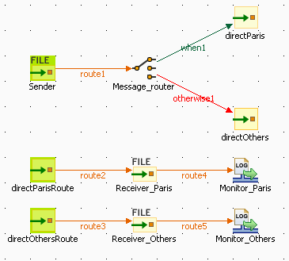
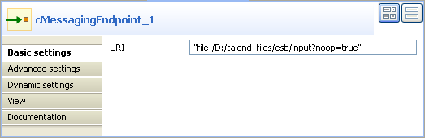
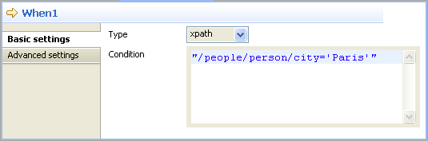
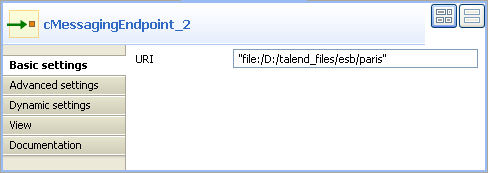
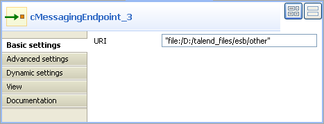
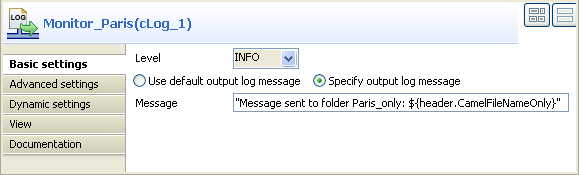
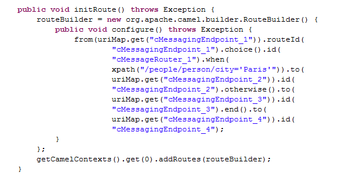

Component Family | Routing | |
Function | cMessageRouter routes messages in different channels according to specified conditions. | |
Purpose | cMessageRouter creates different channels for each filtered message types so that messages can later on be treated more accurately in each new channel. | |
Usage | cMessageRouter is used as a middle component in a Route. It can only have one input channel but multiple output channels. Messages can be outputted through either a When, Otherwise or Route types of connection. | |
Connections | When | Select the When link and click the Component view. In the Type list, select the type of language you will use to declare your condition. In the Condition field, type in the condition that will be used to filter the messages. All the messages that do not match this condition are dropped by default or can be retrieved with the Otherwise link to an different channel. |
| Otherwise | This link automatically retrieves the messages that do not match the When conditions. |
| Route | This link continues the original route designed. |
Limitation | n/a | |
In this scenario, messages are sent from an endpoint and routed to a specific endpoint according to a defined condition.
Here's an extract of the XML file used:
<people> <person id="8"> <firstName>Ellen</firstName> <lastName>Ripley</lastName> <city>Washington</city> </person> </people>
This use case requires one cMessageRouter component and four cMessagingEndpoint components.
|  |
From the Palette, expand the Message folder, select cMessagingEndpoint, and drop one as input and three as output onto the design workspace, as shown above.
Expand the Routing folder, select cMessageRouter and drop it onto the design workspace, between the input component and output ones.
Right-click the first cMessagingEndpoint component, select Row > Route in the menu and drag to the cMessageRouter component.
Do the same between the cMessageRouter and the output cMessagingEndpoint component placed below it.
Right-click the cMessageRouter component, select Trigger > When in the menu and drag to the output cMessagingEndpoint component on the top.
Right-click the cMessageRouter component, select Trigger > Otherwise in the menu and drag to the other output cMessagingEndpoint component.
The cMessageRouter component does not have any property as it filters and routes the messages from one endpoint to others based on the conditions set in its When connection(s).
Double-click the first endpoint component to display the Component view, and type in the URI of the messages you want to route in the URI field.
Here, we are handling files using the noop file specific option. This option tells Camel to leave files as they are, so that the files will not be moved from its original folder.
In the design workspace, click the When connection you created previously and click the Component view to define a filter against which messages will be outputted.
In the Type list, select xpath because the format of the messages used is XML.
In the Condition field, type in
"/people/person/city='Paris'"to retrieve only messages where the value of the city node is Paris.Double-click the endpoint component linked with this When connection to display its Component view, and type in the URI of the folder where you want to route your message in the URI field.
As we are handling files, type in "file:/" followed by the path to folder to which we want to send files matching the defined condition, paris in this use case.
Double-click the endpoint component linked to the Otherwise connection to display its Component view, and type in the URI in the URI field for routing messages not matching the condition defined in the When connection property setting.
As we are handling files, type in "file:/" followed by the path to the folder to which we want to send the files, other in this use case.
Double-click the last endpoint component to display its Component view, and type in the URI in the URI field for routing your messages.
As we are handling hiles, type in "file:/" followed by the path to which all the files from the original endpoint will be sent.
Press Ctrl+S to save your Route.
Click the Code tab at the bottom of the design workspace to have a look at the generated code.
In the code, the messages are routed according to conditions initialized with the
.choice()piece of code, the filter you define is initialized with the.when()piece of code, the non filtered messages are routed through the.otherwise()piece of code and the original route is followed with the.end()piece of code.Click the Run button in the Run view or press F6 to execute your Route.
RESULT: The files containing “Paris” are redirected to a folder name paris, the other messages are redirected in a folder called other, and all the messages to the output folder.